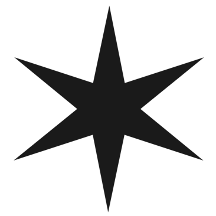

Olá, sou Thaise Oliveira


Criança dos anos 90 que cresceu configurando blogs e fotologs e sempre teve interesse em tecnologia. Escolhi cursar Design por paixão pela fotografia, e nessa jornada aprendi a projetar com foco na solução e usabilidade. Isso, junto com meu antigo interesse em tecnologia, me levou à curiosidade pela programação e soluções web.
Hoje encaro essa curiosidade como um projeto de avanço pessoal: decidi seguir a rota dados → back → front → UX/UI com foco no Fullstack, finalizei o bootcamp de dados da Laboratoria, montei meu próprio PC, adotei o Linux e exploro o mundo de código aberto. Neste ponto, esse site é meu portfólio, playground e minha principal presença na internet, aqui ponho em prática meu aprendizado e compartilho minha jornada entre Design e código.
Contato
Obrigada pela visita!